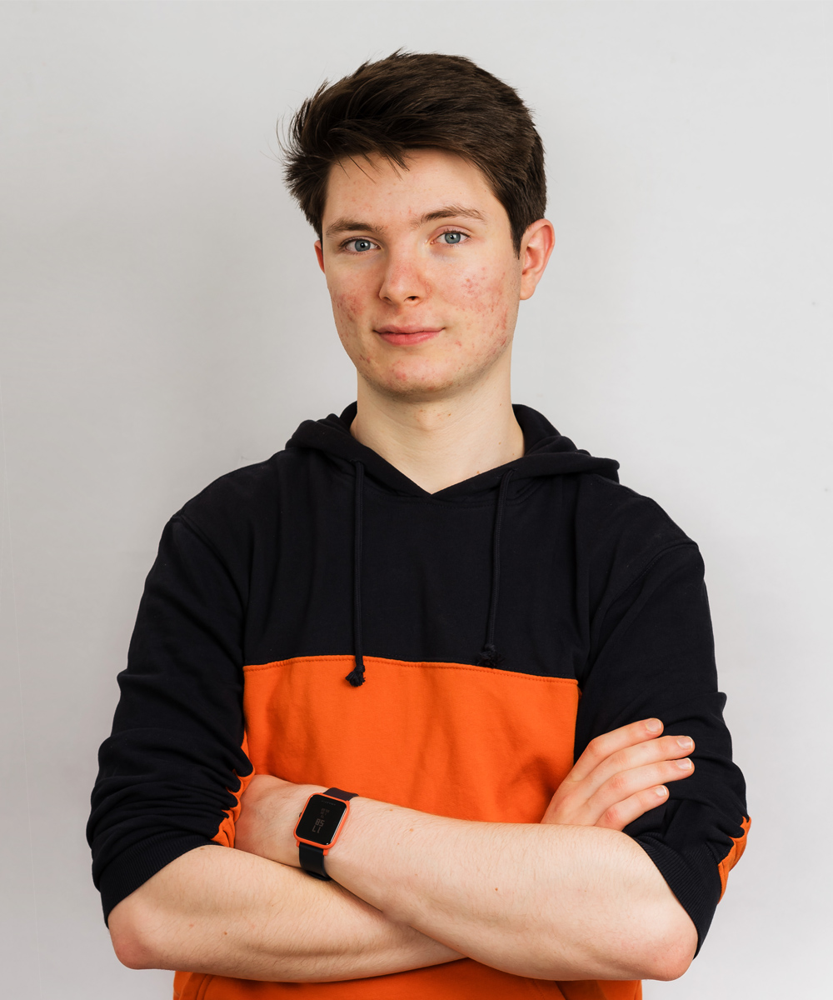

About_Me
Heya, name's Miroslav! I'm Bulgarian, bilingual and a graphic designer with a knack for motion graphics.
Coming to live and study in the UK has been an incredible journey of cultural discovery. I have learned about so many new and unusual things like
blu-tac and the British humour.
In 2018 I had the opportunity to design for the Design Museum in London. I was part of a team, that created an installation for the Beazley designs of the year. I worked on the more technical aspects of the project; creating a 3D environment in Cinema 4D and a short animation in After Effects. My team was selected to pitch to the design museum's assistant curator and was awarded second place.
I am currently studying at the arts university Bournemouth in my second year of graphic design. Earlier this year, I was selected along with a fellow student, to create signage and information labels for the Museum of Design in Plastics (MoDiP). Previously the museum had a more traditional approach to their signage, and this was an opportunity to redesign and modify the labels and bring a contemporary slant to the space.
Prior to moving to the UK, I had the opportunity to travel across Europe with Blancpain GT Series racing team. I was responsible for capturing content for their Instagram and facebook pages. Not only did I film the events I also was responsible for editing.
I love tinkering with electronics. This has sparked an interest in Drones and I have subsequently modified a mini-drone, outfitted it with a tiny camera which can stream video directly to my laptop. I'm currently saving up to get a bigger quadcopter and FPV (First Person View) goggles!
I would be really happy to have a chat about possible internships and work opportunities. please drop me an email m.ivanov1718@gmail.com